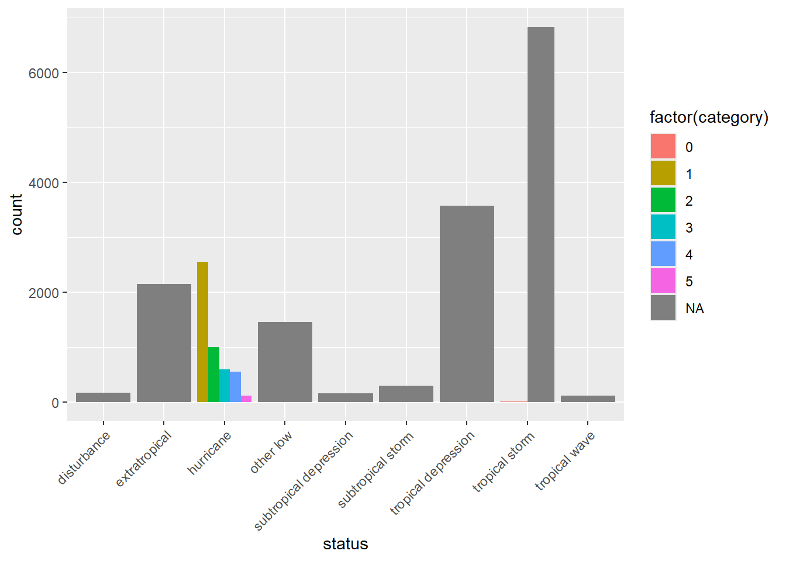

# Plot scatter plot with x = pressure, y = wind
plot(storms$pressure, storms$wind, col = "blue",
main = "Scatterplot of Wind vs Pressure")
R is nowadays equipped with two independent (incompatible, yet coexisting) systems for graphics generation:
Visualization using ggplot2 will be introduced and compared with Base R Graphics.
Example: Draw scatterplot of wind vs pressure of the data set storms (in the tidyverse package).
# Plot scatter plot with x = pressure, y = wind
plot(storms$pressure, storms$wind, col = "blue",
main = "Scatterplot of Wind vs Pressure")
Example: Draw scatterplot matrix of first 4 variables of the data frame iris (in the datasets package).
#> Sepal.Length Sepal.Width Petal.Length Petal.Width Species
#> 1 5.1 3.5 1.4 0.2 setosa
#> 2 4.9 3.0 1.4 0.2 setosa
#> 3 4.7 3.2 1.3 0.2 setosa
#> 4 4.6 3.1 1.5 0.2 setosa
#> 5 5.0 3.6 1.4 0.2 setosa
#> 6 5.4 3.9 1.7 0.4 setosa# pch = 19 stands for points symbols type 19,
# which is solid circle
pairs(iris[,1:4], pch=19)
#> Month_Since_2004 DataScience MachineLearning
#> 1 1 12 16
#> 2 2 10 14
#> 3 3 7 12
#> 4 4 7 16
#> 5 5 5 14
#> 6 6 7 11par(mfrow=c(1,2)) # 1 row, 2 columns (row-wise filling)
plot(ds$Month_Since_2004, ds$DataScience, type="l",
main = "Line Plot for Data Science",
xlab = "Number of Months Since 2004",
ylab = "Data Science Search Counts") # type="l" represents lines
### Plot with points and line
plot(ds$Month_Since_2004, ds$DataScience, type="b", # type="b" represents both
main = "Line and Point Plot for Data Science",
xlab = "Number of Months Since 2004",
ylab = "Data Science Search Counts") 
par(mfrow=c(1,1)) # reset to defaultExample: We could place multiple linegraphs on one plot. Draw two linegraphs (DataScience vs Month_Since_2004, MachineLearning vs Month_Since_2004) on a single plot.
plot(ds$Month_Since_2004, ds$DataScience, type="l", col="red")
lines(ds$Month_Since_2004, ds$MachineLearning, col="blue")
Example: Draw histogram of variable Sepal.Width in the data frame iris (in the datasets package).
data(iris)
hist(iris$Sepal.Width)
library(Hmisc)
hist.data.frame(iris[,1:4])Example:
Draw a boxplot of the variable wind in the data frame storms (in the tidyverse package).
Draw a boxplot of wind vs category of the data frame storms.
par(mfrow=c(2,2)) # Arrange the plots in 2*2 graphical matrix
### (a) boxplot of wind
boxplot(storms$wind, main = "(a) Vertical")
boxplot(storms$wind, horizontal = TRUE, main = "(a) Horizontal")
### (b) boxplot of wind over levels of category
### vertical boxplot by default
boxplot(wind ~ category, data = storms, main = "(b) Vertical")
### horizontal boxplot
boxplot(wind ~ category, data = storms, horizontal = TRUE, main = "(b) Horizontal")
par(mfrow=c(1,1))Example: In the storms dataset,
Draw a barplot of variable status.
Draw a barplot of variable of status and category.
### (a) Barplot
counts = table(storms$status)
barplot(counts)
counts
#>
#> disturbance extratropical hurricane
#> 171 2151 4803
#> other low subtropical depression subtropical storm
#> 1453 151 298
#> tropical depression tropical storm tropical wave
#> 3569 6830 111
# Horizontal barplot
barplot(counts, horiz=TRUE)
### (b) Barplot of two variables
counts = table(storms$category, storms$status)
counts
#>
#> disturbance extratropical hurricane other low subtropical depression
#> 0 0 0 0 0 0
#> 1 0 0 2548 0 0
#> 2 0 0 993 0 0
#> 3 0 0 593 0 0
#> 4 0 0 553 0 0
#> 5 0 0 116 0 0
#>
#> subtropical storm tropical depression tropical storm tropical wave
#> 0 0 0 1 0
#> 1 0 0 0 0
#> 2 0 0 0 0
#> 3 0 0 0 0
#> 4 0 0 0 0
#> 5 0 0 0 0
barplot(counts, col= c("steelblue", "firebrick", "lightblue", "mistyrose", "lightcyan",
"lavender", "cornsilk"), besid=TRUE, legend = rownames(counts),
args.legend=list(title="Category"))
category variable in storms represents the Saffir-Simpson storm category (range from 1 to 5), which the scale based only on a hurricane’s maximum sustained wind speed.library(ggplot2) is used by fivethirtyeight, Financial Times, BBC, the Urban Institute, and more.library(ggplot2) is like playing a set of building blocks (it’s fun!)Assume we have the variables xvar, yvar in the data frame df.
### scatterplot
ggplot(data=df, mapping=aes(x=xvar, y=yvar)) +
geom_point()
### linegraph
ggplot(data=df, mapping=aes(x=xvar, y=yvar)) +
geom_line()
#linegraph with dots
ggplot(data=df, mapping=aes(x=xvar, y=yvar)) +
geom_line() +
geom_point()
### histogram
ggplot(data=df, mapping=aes(x=xvar)) +
geom_histogram()
### boxplot
# boxplot of one variable yvar
ggplot(data=df, mapping=aes(y=yvar)) +
geom_boxplot()
# boxplot of the yvar vs xvar
ggplot(data=df, mapping=aes(x=xvar, y=yvar)) +
geom_boxplot()
### barplot of variable x
# If not pre-counted, use geom_bar()
ggplot(data=df, mapping=aes(x=xvar))+
geom_bar()
# If precounted, use geom_col()
ggplot(data=df_counted, mapping=aes(x=xvar,y=counts))+
geom_col()Function: geom_point(x,y)
Example: Draw scatterplot of wind vs pressure of the data set storms (in the tidyverse package).
# Data preparation
library(tidyverse)
data(storms) # data frame in tidyverse package
storms[6923, "category"]=0 #Fixed one error value
storms$category = as.factor(storms$category)# load the data set storms (in the tidyverse package)
ggplot(data = storms, mapping = aes(x=pressure, y=wind))+
geom_point() # Changing the transparency
ggplot(storms, mapping = aes(x=pressure, y=wind)) +
geom_jitter(alpha=0.2)Function: ggpairs(df)
Example: Draw scatterplot matrix of first 4 variables of the data frame iris (in the datasets package).
data(iris)
library(GGally)
#> Registered S3 method overwritten by 'GGally':
#> method from
#> +.gg ggplot2
ggpairs(iris[,1:4])Function: geom_line()
Example: From https://trends.google.com/, we downloaded the time series data set GoogleTrendDataScience.csv with three variables Month_Since_2004, DataScience, MachineLearning.
Draw a linegraph of the Data Science search counts vs Month.
Draw a linegraph with points.
ds = read.csv("GoogleTrendDataScience.csv")
### Plot with line only
p1 = ggplot(ds, aes(x = Month_Since_2004, y = DataScience)) +
geom_line()
### Plot with points and line
p2= ggplot(ds, aes(x = Month_Since_2004, y = DataScience)) +
geom_line() +
geom_point(size=1.5)
library(gridExtra)
grid.arrange(p1, p2, nrow = 1, ncol = 2)Function: geom_line()
Example: We could place multiple linegraphs on one plot. Draw two linegraphs (DataScience vs Month_Since_2004, MachineLearning vs Month_Since_2004) on one plot.
ggplot(ds) +
geom_line(aes(x=Month_Since_2004, y=DataScience), col = "tomato3", size = 1.5) +
geom_line(aes(x=Month_Since_2004, y=MachineLearning), col="steelblue", size = 1.5)Function: geom_histogram()
Example: Draw histogram of variable Sepal.Width in the data frame iris (in the datasets package).
## Illini orange and blue!
ggplot(iris, aes(x=Sepal.Width)) +
geom_histogram(binwidth=0.2, color="#13294B", fill="#FF5F05")Functions: geom_boxplot()
Example:
Draw a boxplot of the variable wind in the data frame storms (in the tidyverse package).
Draw a boxplot of wind vs category of the data frame storms .
### (a) boxplot of wind
p1 = ggplot(storms, aes(y=wind))+
geom_boxplot()
### (b) boxplot of wind over levels of category
### vertical boxplot by default
p2 = ggplot(storms, aes(x = category, y = wind))+
geom_boxplot()
### horizontal boxplot
p3 = ggplot(storms, aes(y = category, x = wind))+
geom_boxplot()
# Or
p4 = ggplot(storms, aes(x = category, y = wind))+
geom_boxplot()+
coord_flip()
grid.arrange(p1, p2, p3, p4, nrow = 2, ncol = 2)Functions: geom_bar(), geom_col()
Example: In the storms dataset,
Draw a barplot of variable status.
Draw a barplot of variable of status and category
### Barplot
# If not pre-counted, use geom_bar()
ggplot(storms, aes(x = status))+
geom_bar()+
scale_x_discrete(guide = guide_axis(angle = 45)) ### Rotate the x axis label
# If precounted, use geom_col()
storms %>%
group_by(status) %>%
summarise(count = n())%>%
ggplot(aes(x = status, y = count)) +
geom_col()+
scale_x_discrete(guide = guide_axis(angle = 45)) ### Rotate the x axis label
# Horizontal barplot
ggplot(storms, aes(y=status))+
geom_bar()
### Barplot of two variables
ggplot(storms, aes(x = status, fill = factor(category)))+
geom_bar(position = "dodge")+
scale_x_discrete(guide = guide_axis(angle = 45)) ### Rotate the x axis label
category variable in storms represents the Saffir-Simpson storm category (range from 1 to 5), which the scale based only on a hurricane’s maximum sustained wind speed.### Barplot
p1 = ggplot(storms, aes(x = status))+
geom_bar()+
scale_x_discrete(guide = guide_axis(angle = 45)) ### Rotate the x axis label
# Horizontal barplot
p2 = ggplot(storms, aes(y = status))+
geom_bar()
### Barplot of two variables
p3 = ggplot(storms, aes(x = status, fill = factor(category))) +
geom_bar(position = "dodge")+
scale_x_discrete(guide = guide_axis(angle = 45)) ### Rotate the x axis label
grid.arrange(p1, p2, p3, layout_matrix = rbind(c(1,2), c(3,3)))ggplot(storms, aes(x = status, fill = factor(category))) +
geom_bar(position = "dodge")+
scale_x_discrete(guide = guide_axis(angle = 45))
ggsave("The Barplots.png") ### Save the last plot
ggsave("p1.png", plot = p1) ### Save the plot specifiedR Graph Gallery https://r-graph-gallery.com/
Rstudio Cheatsheets https://www.rstudio.com/resources/cheatsheets/
Reference Books (Free online books with excellent material)
Comments
If a graph could be done with ggplot2, it could probably be done with base R graphics, and vice versa.
To take a quick look at the data, the one-line base R graphics functions are quick and easy.
For data visualization, ggplot2 is much easier to code and with a much better output.